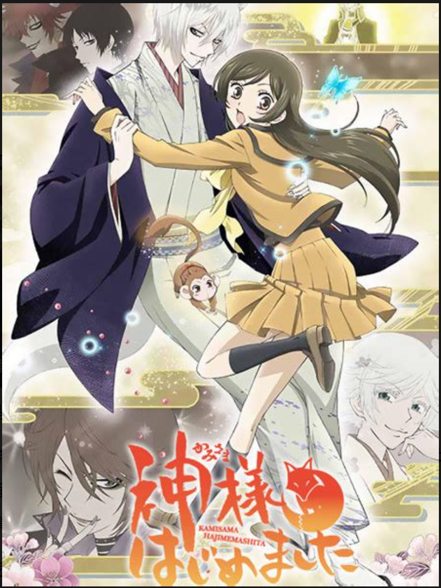
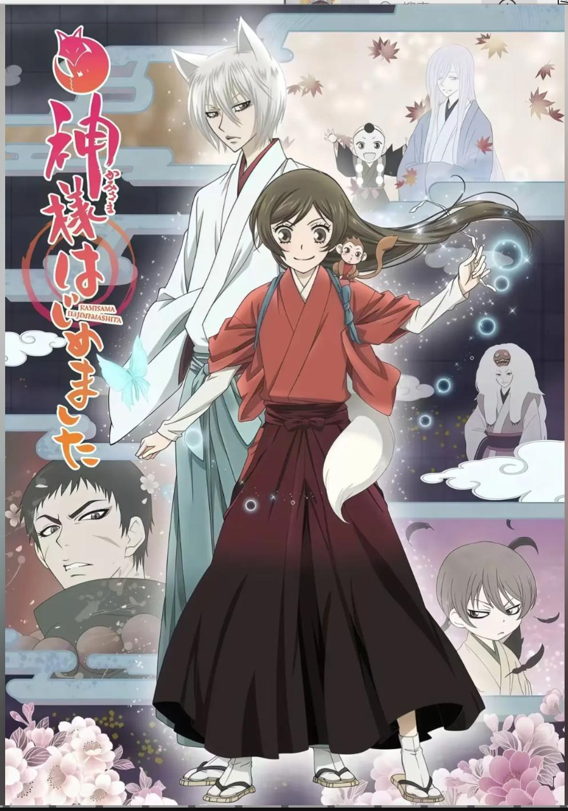
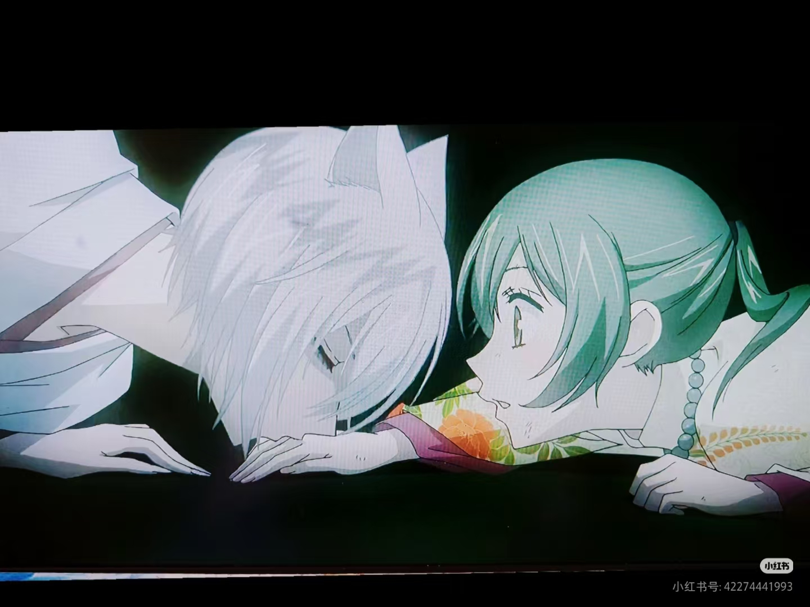
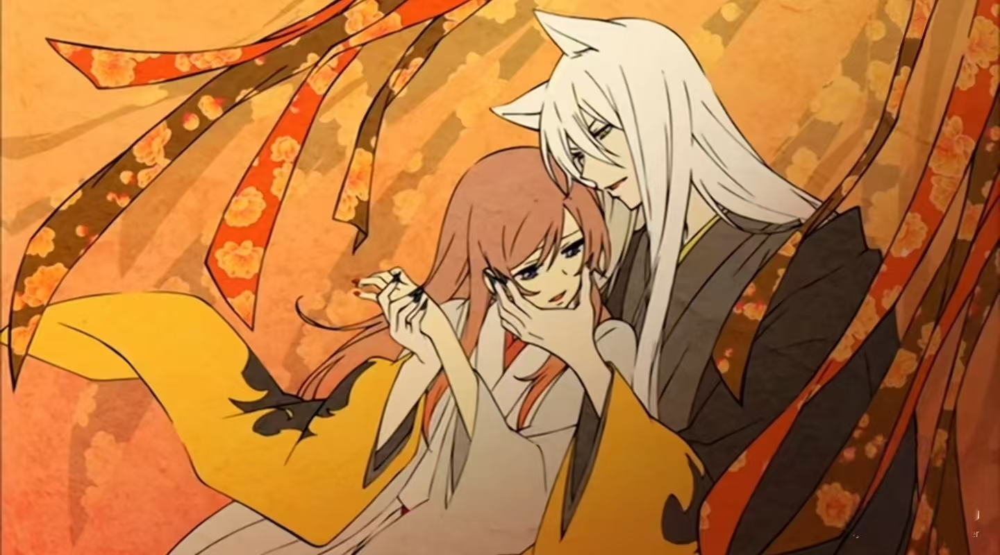
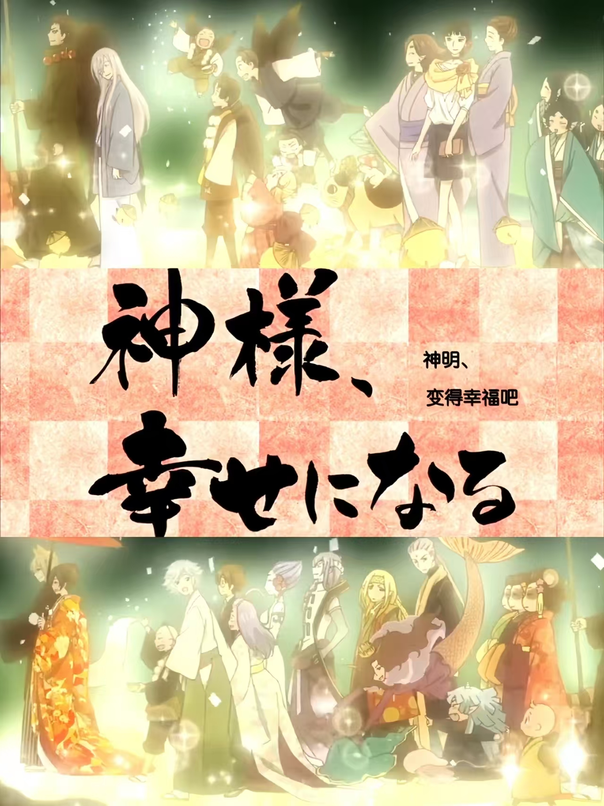

每一篇章都是一段动人的故事

第1集 - 第13集
讲述了奈奈生如何从一个普通的高中女生，因缘际会成为了土地神。 她遇到了神使巴卫，两人从最初的不合到逐渐产生感情。 奈奈生也在这个过程中逐渐成长，学会了如何当好一个神明。

第二季主要篇章
奈奈生和巴卫前往鞍马山，遇到了天狗鞍马。 在这个篇章中，奈奈生展现了她作为神明的成长， 同时也加深了与巴卫之间的感情。

日常温馨篇章
充满日式风情的祭典故事，奈奈生和巴卫一起参加各种祭典活动。 在烟火和灯笼的映衬下，两人的感情持续升温。

OVA 特别篇
巴卫的过去终于揭晓！五百年前，巴卫曾经爱上过一位人类女子... 而那个女子竟然和奈奈生有着惊人的相似之处。 跨越五百年的因缘，命运的红线将两人紧紧相连。

漫画最终章
经历了重重考验，奈奈生和巴卫的爱情终于迎来了圆满的结局。 在众人的祝福下，两人举行了婚礼，开始了新的生活。 这是一个关于爱与守护的美丽故事的完美落幕。